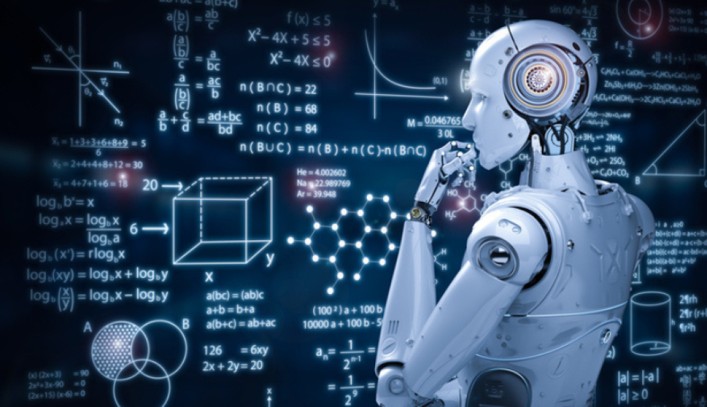

A quoi sert l'IA générative
L'IA générative à de nombreuses applications pratiques dans différents secteurs :
- Création de contenu : Elle peut générer des articles, des poèmes, des histoires, des scripts, des résumés, et même des dialogues (par exemple, ChatGPT).
- Design et art: Génération d'images, de dessins, ou de musique originale. Par exemple, des IA comme DALL·E génèrent des images à partir de descriptions textuelles.
- Simulations et modélisation : Création de données synthétiques pour tester des systèmes dans des environnements simulés, utiles dans la recherche et les industries comme la médecine ou l'auto.
Comment fonctionne l'IA générative (utilisation )

L'IA générative fonctionne principalement à partir de modèles d'apprentissage supervisé ou non supervisé qui sont formés sur de grandes quantités de données. Voici un résumé des étapes de son fonctionnement :
- Collecte de données : L'IA générative est alimentée avec de grandes quantités de données provenant de diverses sources (par exemple, des textes, des images, de la musique, etc.).
- Génération: Une fois l'entraînement effectué, l'IA peut générer des données similaires à celles sur lesquelles elle a été formée. L'utilisateur peut fournir un prompt ou une consigne (par exemple, "Génère une image d'un chat sur une plage").
- Évaluation et feedback: Le modèle peut ajuster sa génération en fonction du feedback ou des erreurs identifiées dans ses productions.